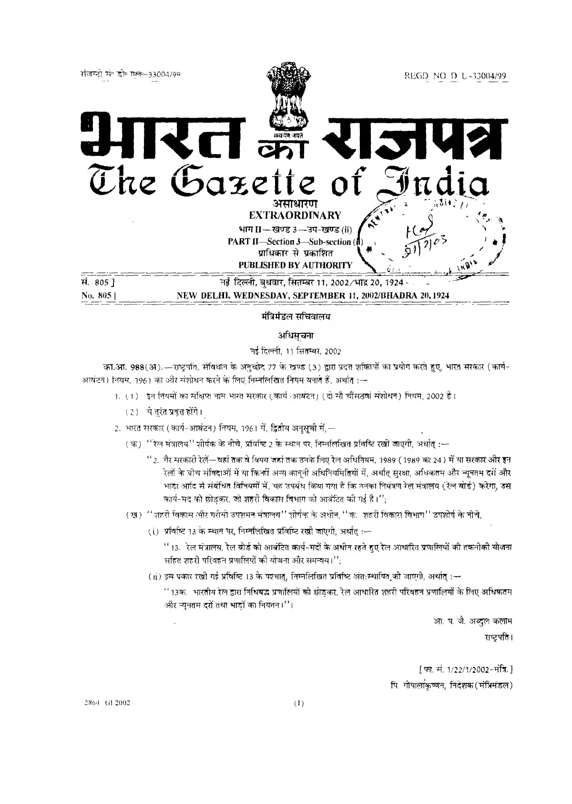
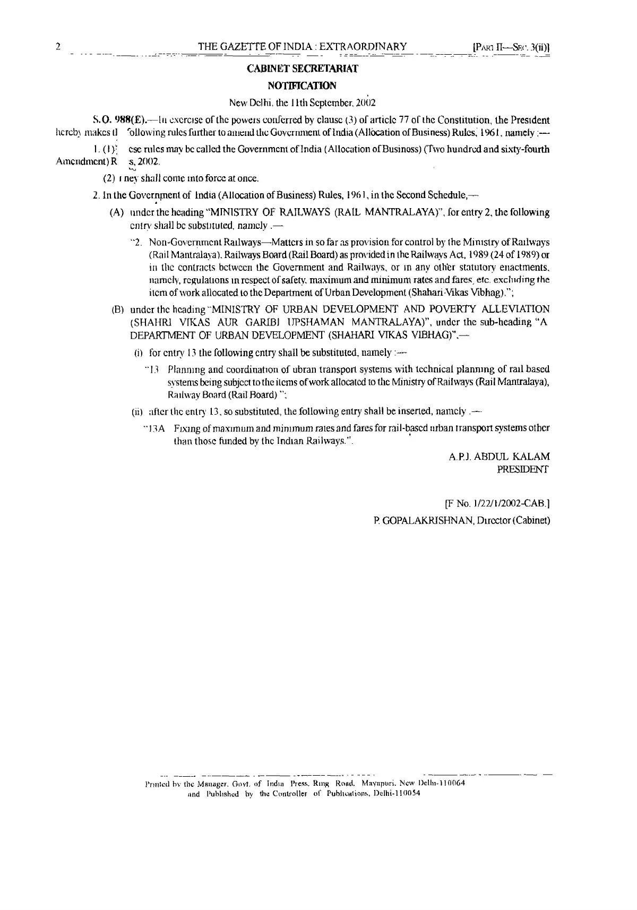

Amendment #264 (S.O. 988(E), 2002)
3 changes: 0 to the First Schedule, 3 to the Second Schedule. 3 applied
The order, page by page
Page 1 of 2

Page 2 of 2

123Schedule 2 › MINISTRY OF RAILWAYS › entry 2
- 2. Non-Government Railways-Matters in so far as provision for control by the Ministry of Railways (Rail Mantralaya), Railways Board (Rail Board) as provided in the Railways Act, 1989 (24 of 1989) or in the contracts between the Government and Railways, or in any other statutory enactments namely,…
applied at schedule 2 › ministry Ministry of Railways (Rail Mantralaya), Railway Board (Rail Board) › entry 2 in the Rules after #264
states inferred loose
Schedule 2 › MINISTRY OF URBAN DEVELOPMENT AND POVERTY ALLEVIATION › DEPARTMENT OF URBAN DEVELOPMENT › entry 13
- 13 Planning and coordination of ubran transport systems with technical planning of rail based systems being subject to the items of work allocated to the Ministry of Railways (Rail Mantralaya) Railway Board (Rail Board)
applied at schedule 2 › ministry MINISTRY OF URBAN DEVELOPMENT AND POVERTY ALLEVIATION › department A › entry 13 in the Rules after #264
after Schedule 2 › MINISTRY OF URBAN DEVELOPMENT AND POVERTY ALLEVIATION › DEPARTMENT OF URBAN DEVELOPMENT › entry 13
- 13A Fixing of maximum and minimum rates and fares for rail-based urban transport systems other than those funded by the Indian Railways.
applied at schedule 2 › ministry MINISTRY OF URBAN DEVELOPMENT AND POVERTY ALLEVIATION › department A › entry 13 in the Rules after #264
How this document was read
Changes placed by an inference rule
| Change | Rule | Status | What |
|---|---|---|---|
| 1 | loose | accepted | change 1: ministry MINISTRY OF RAILWAYS taken for ministry Ministry of Railways (Rail Mantralaya), Railway Board (Rail Board), named loosely |
From the Government of India (Allocation of Business) Rules, 1961 and their amendments, as published by the Cabinet Secretariat (cabsec.gov.in), read by orgpedia. The readings of the older scanned gazettes have known gaps.